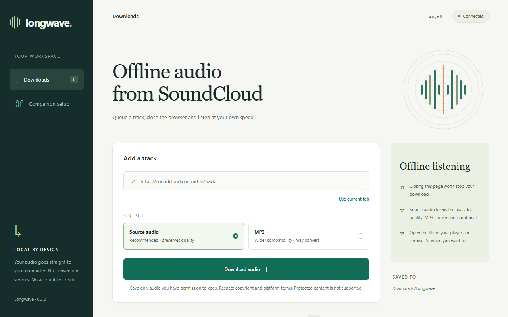

Take the whole recording offline.
Save permitted SoundCloud audio from Chrome or Edge. Your computer handles the long download. Your player handles the speed.
Download Longwave Installation guide
Choose your device
- Windows x64
- Extract the setup ZIP and run Longwave-Setup.exe. It supplies the runtime and checks the media tools before installation.
- macOS and Linux
-
Use the portable Unix archive with Python and FFmpeg. Debian and Ubuntu also have an
APT-installable package. Run
longwave connectto register the companion. - iPhone and Android
- Pair the phone browser with a running computer over your private HTTPS connection. Play a track at 2× or save it into the phone’s downloads.
On desktop, select Load unpacked in your browser’s extensions settings and choose the folder shown by the companion. The release page includes checksums and signed build provenance.